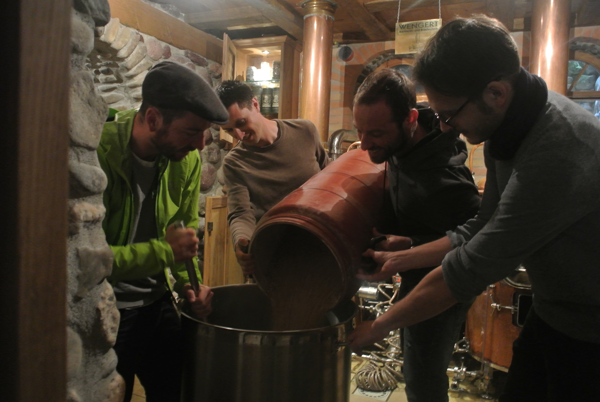

What can we do for you?
- Custom developments
- Support and maintenance
- Training and consulting
- Migrations
- Infrastructure planning and deployments
- Refactorings and quality assurance
What do we offer?
- Support packages
- QGIS sustainability initiative
- 5, 10, 20, 50, 100 days with possible SLA
- Custom developments (QGIS core, plugins, models, workflows, ...)
- QField Jumpstart packages
- Ad-hoc courses

Get in touch
@OPENGISch
info@opengis.ch